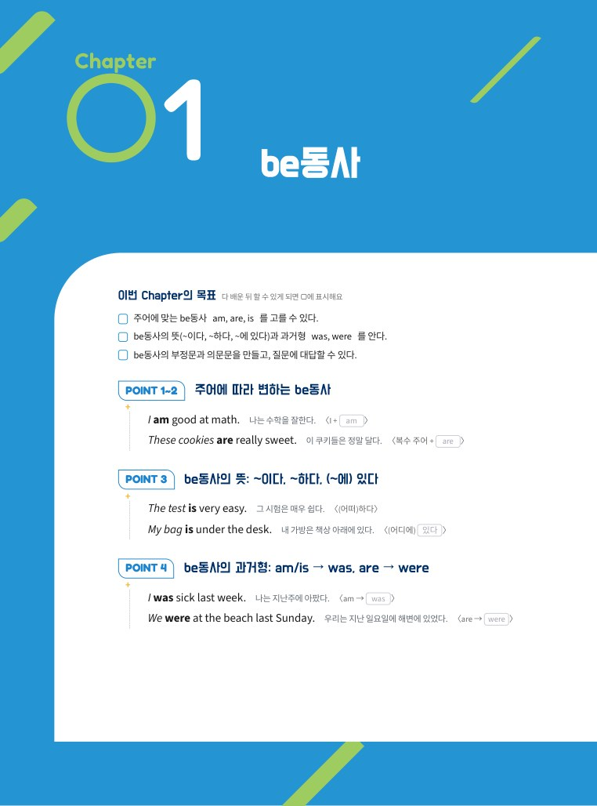
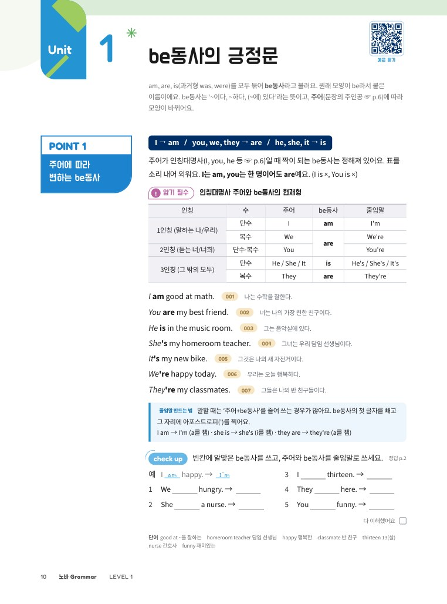
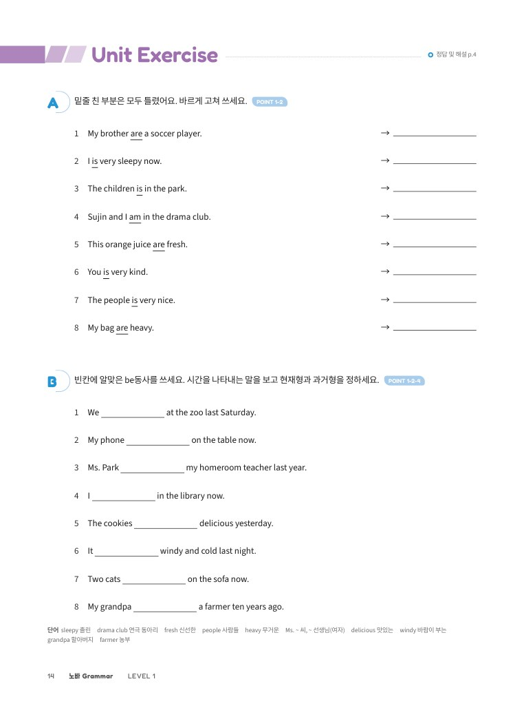
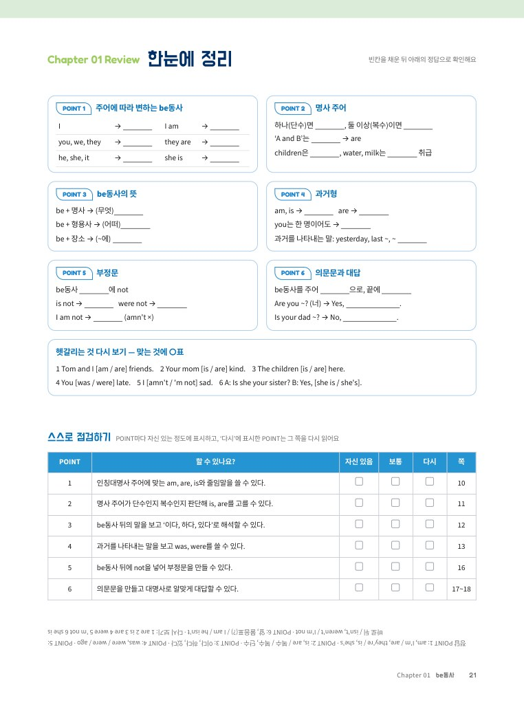
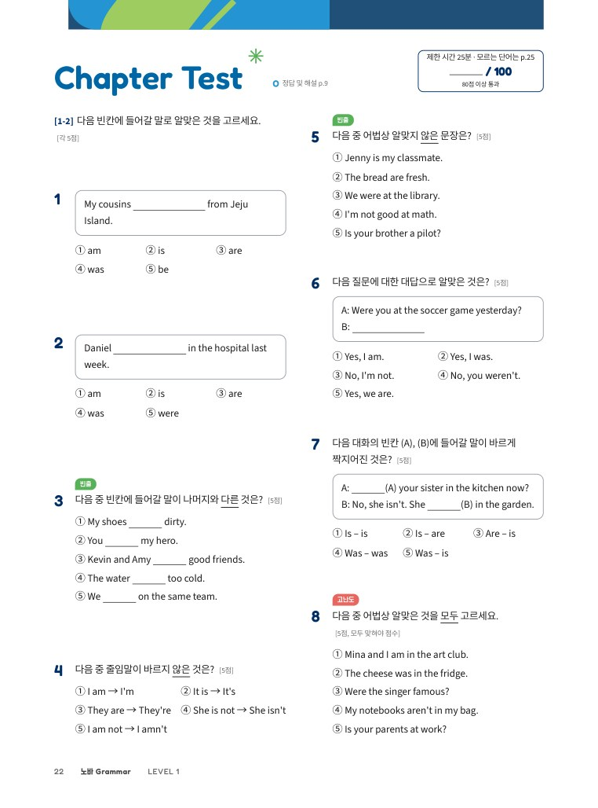
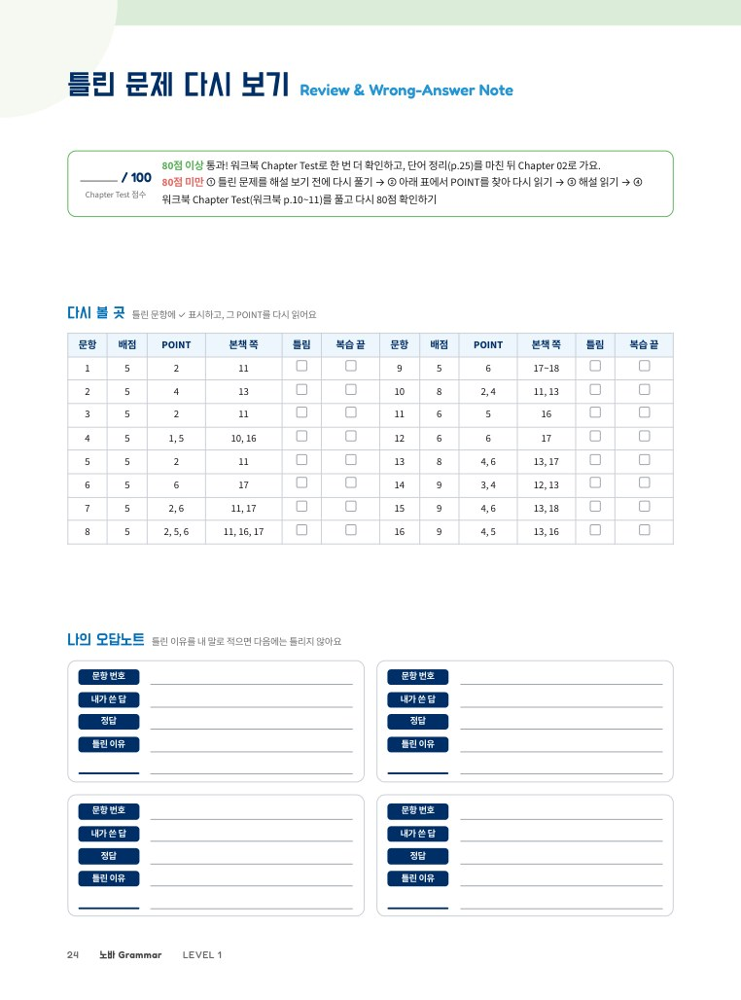
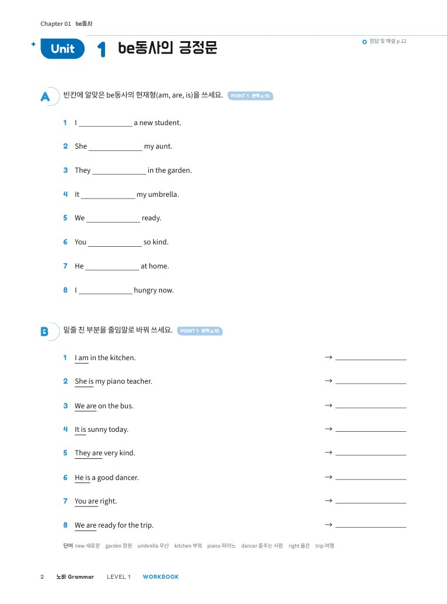
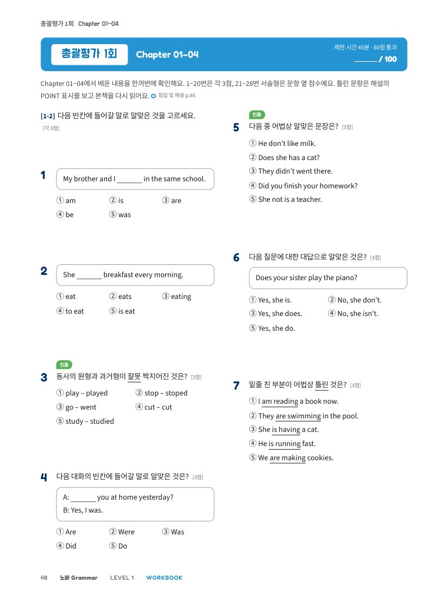
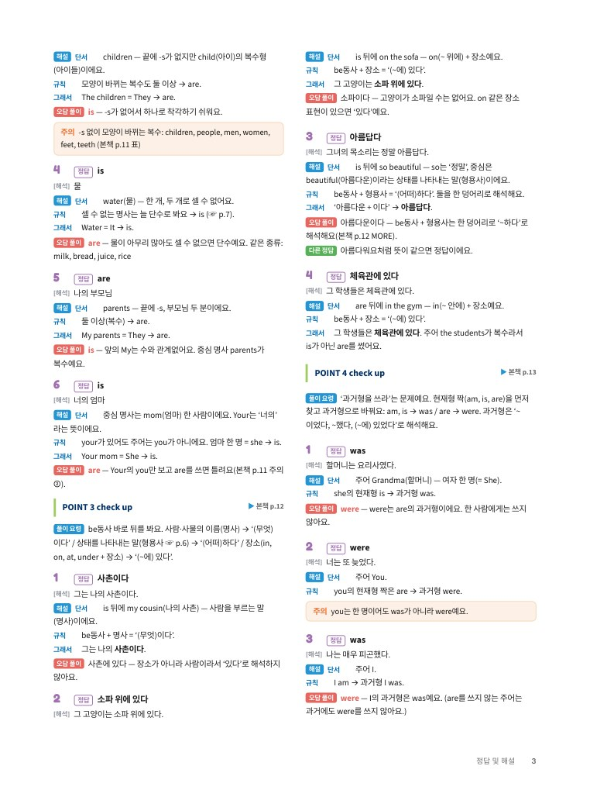
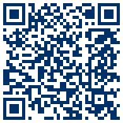

Nova Grammar
혼자서도 끝까지 하는 중1 영문법
머리말
Preface혼자서 영어 문법을 시작하는 여러분에게
영어 문법이 어렵게 느껴지는 건 규칙이 많아서가 아니라, 왜 그런지 차근차근 설명을 들을 기회가 적었기 때문이에요. Nova Grammar는 선생님이 옆에 없어도 혼자서 끝까지 공부할 수 있도록 만든 책이에요.
모든 POINT는 규칙 한 줄로 시작해요. 예문마다 바로 옆에 해석을 달았고, 원어민이 읽어 주는 음원을 QR로 들을 수 있어요. 처음 나오는 문법 용어는 그 자리에서 쉬운 말로 풀었어요.
문제를 풀고 나면 통과 기준을 확인하세요. 기준을 넘으면 다음으로, 넘지 못하면 표시된 POINT로 돌아가면 돼요. 정답 및 해설에는 정답이 왜 맞는지뿐 아니라 다른 선택지가 왜 틀렸는지까지 적었어요. 해설만 읽어도 스스로 이해할 수 있도록요.
하루 30분이면 충분해요. 한 Chapter를 7일 동안 천천히 따라가다 보면, 문법이 외워야 할 규칙이 아니라 문장을 만드는 도구로 보이기 시작할 거예요. 마지막 장을 넘기는 날까지 Nova Grammar가 함께할게요.
NOVA ENGLISH
차례
Contents기초 다지기 p.6~7
예문 듣기 QR (각 Unit 첫 쪽)
구성과 특징
How to Use This Book한 Chapter는 도입 → Unit(개념 + Unit Exercise) → 정리 → Chapter Test → 다시 보기 순서로 이어져요.










예문 듣기혼자서도 끝까지! Nova Grammar 공부법
이 책은 선생님 설명 없이 혼자 공부할 수 있게 만들었어요. 아래 순서대로 공부하고, 통과 기준을 넘으면 다음 단계로 가요. 하루 30분 안팎으로, 진도표(p.5)의 7일 계획을 따라가면 알맞아요.
- 학습 목표와 미리 풀어 보기 — Chapter 첫 쪽에서 무엇을 배울지 읽고, O/X 문제로 지금 아는 것을 확인해요.
- POINT 읽기 — 규칙 한 줄 → 설명 → 예문 순서로 읽어요. 예문은 소리 내어 읽고 옆의 해석과 맞춰 봐요. 모르는 말은 ‘기초 다지기’(p.6~7)를 펼쳐요.
- check up — 바로 풀고 바로 채점해요(정답 및 해설). 틀리면 그 POINT를 다시 읽고 다시 풀어요. 다 이해했으면 다 이해했어요 □에 표시해요.
- Unit Exercise — 맞은 개수를 적고 통과 기준을 확인해요.
- 한눈에 정리 — 빈칸을 채우며 Chapter 전체를 정리해요. 정답은 같은 쪽 아래에 거꾸로 있어요.
- Chapter Test — 시험처럼 제한 시간(25~30분) 안에 풀고 100점 만점으로 채점해요.
- 오답노트와 다시 볼 곳 — 틀린 문항이 어느 POINT인지 표에서 찾아 복습하고, 오답노트에 이유를 적어요.
- 워크북으로 한 번 더 연습하고, 단어 정리로 마무리해요.
다시 기준보다 낮으면: ① 틀린 문제를 해설 보기 전에 한 번 더 풀기 → ② 문제 옆 POINT 표시를 보고 그 POINT를 다시 읽기 → ③ 그래도 모르면 해설 읽기 → ④ 워크북의 같은 Unit 풀기
| 긍정문 | ‘~이다, ~하다’처럼 아니라고 하지 않는 보통 문장 I am happy. |
|---|---|
| 부정문 · 의문문 | ‘~이 아니다’라고 하는 문장 · ‘~이니?’라고 묻는 문장 I am not happy. / Are you happy? |
| 현재형 · 과거형 | 지금의 일을 말하는 동사 모양 · 지나간 일을 말하는 동사 모양 am, is, are / was, were (이렇게 때에 따라 바뀌는 것을 시제라고 해요) |
| 동사원형 | 동사의 원래 모양 be(→ am, is, are), go, eat |
| 어법상 | ‘영어 문장을 만드는 규칙에 따라’라는 뜻. ‘어법상 알맞은 것’ = 규칙에 맞는 것 |
나의 학습 진도표
My Study PlanUnit을 끝낼 때마다 □에 표시하고 점수를 적어요. 통과 칸에 표시가 쌓이면 실력도 쌓여요.
| Chapter | Unit 1 | Unit 2 | Unit 3 | 본책 Test | 워크북 Test | 통과 | 시작한 날 | 끝낸 날 |
|---|---|---|---|---|---|---|---|---|
| 01 be동사 | — | /100 | /100 | |||||
| 02 일반동사 | /100 | /100 | ||||||
| 03 현재진행형과 미래 표현 | — | /100 | /100 | |||||
| 04 조동사 | — | /100 | /100 | |||||
| 총괄평가 1회 (Ch 01~04) | 워크북 총괄평가 | /100 | ||||||
| 05 명사와 관사 | /100 | /100 | ||||||
| 06 대명사 | /100 | /100 | ||||||
| 07 형용사, 부사, 비교 | /100 | /100 | ||||||
| 08 여러 가지 문장 종류 | /100 | /100 | ||||||
| 총괄평가 2회 (Ch 05~08) | 워크북 총괄평가 | /100 | ||||||
| 09 문장의 여러 형식 | /100 | /100 | ||||||
| 10 to부정사와 동명사 | /100 | /100 | ||||||
| 11 전치사 | /100 | /100 | ||||||
| 12 접속사 | — | /100 | /100 | |||||
| 총괄평가 3회 (Ch 09~12) | 워크북 총괄평가 | /100 | ||||||
| 날 | 할 일 | 쪽 | 완료 |
|---|---|---|---|
| 1일 | 기초 다지기 · 미리 풀어 보기 · POINT 1~2 | p.6~11 | |
| 2일 | POINT 3~4 · Unit Exercise (Unit 1) | p.12~15 | |
| 3일 | 워크북 Unit 1 | 워크북 p.2~5 | |
| 4일 | POINT 5~6 · Unit Exercise (Unit 2) | p.16~20 | |
| 5일 | 워크북 Unit 2 · 서술형 집중 | 워크북 p.6~9 | |
| 6일 | 한눈에 정리 · Chapter Test · 오답노트 | p.21~24 | |
| 7일 | 워크북 Chapter Test · 단어 정리 | 워크북 p.10~11 · 본책 p.25 |
기초 다지기 ① 문장을 만드는 말
Basics문법책에는 ‘주어, 동사, 명사’ 같은 말이 계속 나와요. 처음 한 번만 제대로 알아 두면 앞으로 훨씬 쉬워요. 공부하다 모르는 말이 나오면 이 쪽으로 돌아오세요.
| 주어 | 문장의 주인공이에요. 우리말의 ‘~은, ~는, ~이, ~가’에 해당해요. Mina is happy. → 주어 Mina (미나는) |
|---|---|
| 동사 | 주어가 ‘어떠하다, 무엇이다, 무엇을 한다’를 나타내는 말이에요. 영어 문장에는 동사가 꼭 있어요. Mina is happy. / Mina runs. → 동사 is, runs |
| 명사 | 사람, 동물, 물건, 장소의 이름이에요. Tom, teacher, dog, book, school, water |
|---|---|
| 대명사 | 명사를 대신하는 말이에요. 같은 말을 반복하지 않으려고 써요. Tom → he(그) / Mina → she(그녀) / the book → it(그것) / Tom and Mina → they(그들) 특히 I, you, he, she, it, we, they처럼 사람·사물을 가리키는 대명사를 인칭대명사라고 해요. |
| 동사 | 상태나 동작을 나타내는 말이에요. am, is, are (be동사: ~이다, ~하다, ~에 있다) / run, eat, like (일반동사: 달리다, 먹다, 좋아하다) |
| 형용사 | 사람이나 사물의 상태·성질을 나타내는 말이에요. ‘어떠한’에 해당해요. happy 행복한 · tall 키가 큰 · easy 쉬운 · hungry 배고픈 |
| 전치사 | 명사 앞에서 장소·시간 등을 나타내는 말이에요. (Ch 11에서 자세히) in ~ 안에 · on ~ 위에 · under ~ 아래에 · at ~에 |
기초 다지기 ② 인칭과 수, 쓰기 규칙
| 1인칭 | 말하는 사람 — I(나), we(우리) |
|---|---|
| 2인칭 | 듣는 사람 — you(너, 너희) |
| 3인칭 | 나와 너를 뺀 모든 사람과 사물 — he, she, it, they Tom, my dog, the book, my parents처럼 이름이나 명사도 모두 3인칭이에요! |
| 단수 | 하나 — a book, my dog, Tom, she |
|---|---|
| 복수 | 둘 이상 — books, my dogs, Tom and Mina, they · 보통 끝에 -s/-es: book → books, box → boxes · 모양이 바뀌는 복수: child → children, man → men, woman → women, person → people, foot → feet, tooth → teeth · -s로 끝나도 하나인 말: bus, class, glass |
| 셀 수 없는 명사 | 하나, 둘 셀 수 없는 것(액체, 덩어리, 재료)이에요. 늘 단수로 생각해요. (Ch 05에서 자세히) water, milk, juice, bread, cheese, rice, spaghetti, money, weather |
| 대문자 | 문장의 첫 글자, I(나), 사람 이름·나라 이름은 항상 대문자로 써요. My dog is cute. / I am Tom. / Korea |
|---|---|
| 문장 부호 | 설명하는 문장 끝에는 마침표(.), 묻는 문장 끝에는 물음표(?)를 써요. |
| 줄임말 | 두 단어를 하나로 줄인 말이에요. 빠진 글자 자리에 아포스트로피(’)를 찍어요. I am → I’m (a가 빠짐) · is not → isn’t (o가 빠짐) |